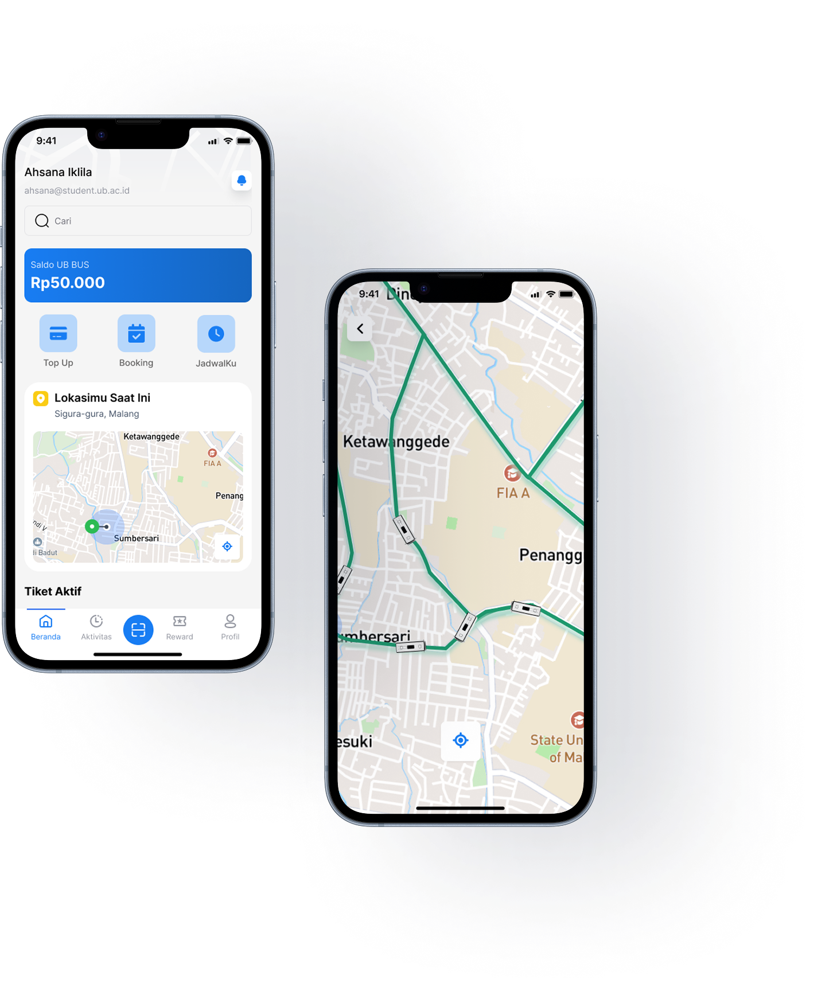
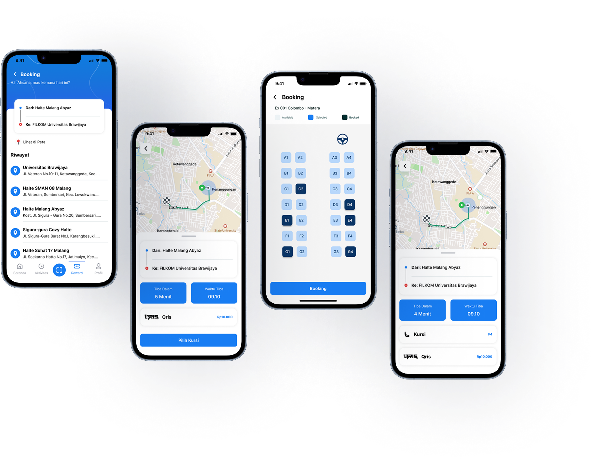
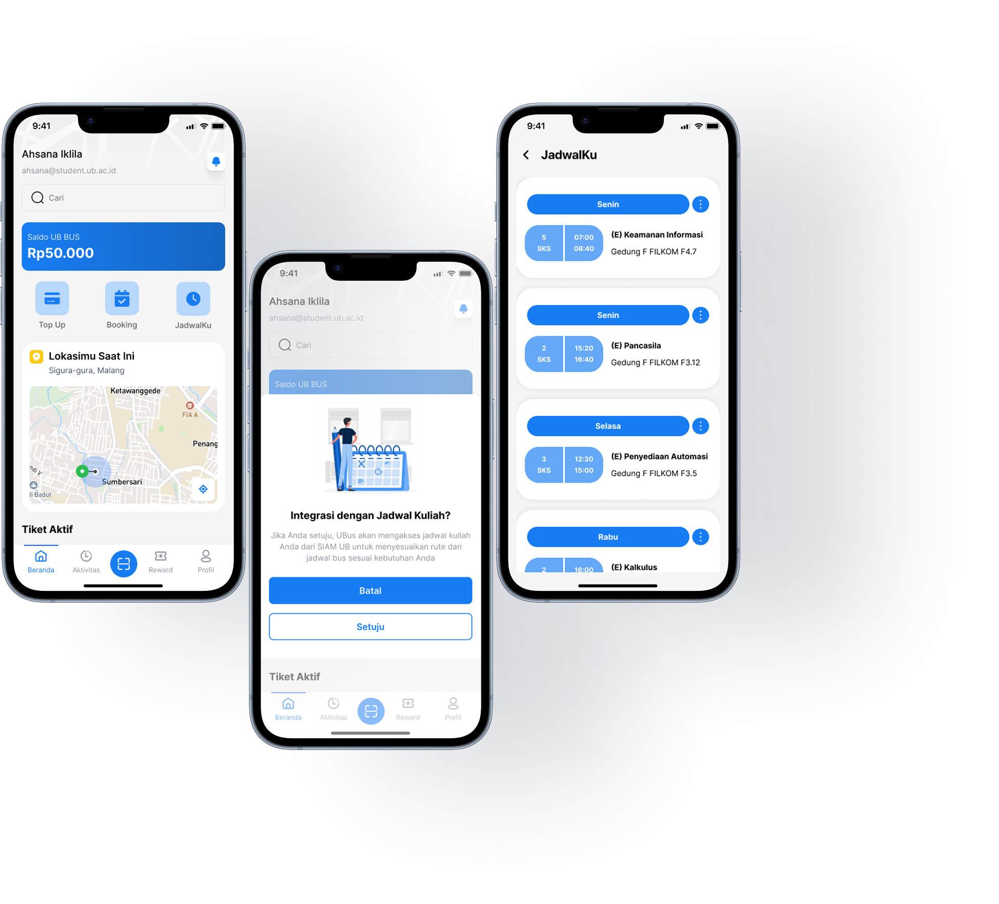
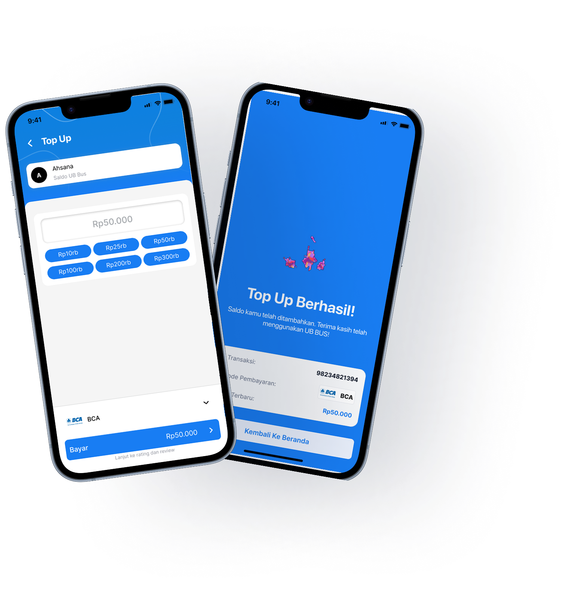

UX Designer
Figma
May 2025 - Jun 2025
UBus is a user experience design project developed as part of the User Experience Planning course. The project addresses mobility challenges within Universitas Brawijaya, where the wide campus area, limited parking space, and lack of an integrated internal transportation system often cause delays, fatigue, and increased reliance on private vehicles. The project focuses on designing a mobile application prototype that helps students and academic staff monitor campus shuttle buses in real time, plan their trips efficiently, and reduce uncertainty during daily commuting. The solution emphasizes a user-centered design approach by aligning system features with real user needs gathered through research, testing, and iterative design.
Allows users to view the live position of campus shuttle buses on a map, helping them estimate arrival times and plan their departure more accurately.
Enables users to book shuttle trips in advance and select available seats, reducing uncertainty and ensuring a more comfortable commuting experience.
Supports users in planning trips based on their academic schedules by providing estimated travel times, departure reminders, and route information.
Provides a digital wallet feature that allows users to top up balance and complete shuttle payments seamlessly within the application.
The process began with identifying real mobility problems within the campus environment. Initial assumptions were validated through observations and early discussions to ensure that the identified issues reflected actual user challenges rather than personal assumptions.
User research was conducted through surveys and interviews to understand user behavior, needs, and pain points related to campus transportation. This phase focused on validating the problem, gathering evidence, and identifying patterns that would guide solution development.
Insights from user research were analyzed to define the most relevant solution. Based on validated problems, key product features were determined to address user needs effectively. This phase emphasized prioritization, feasibility, and alignment with user expectations.
Based on the defined solution and feature requirements, wireframes and interface designs were created to visualize how users would interact with the application. The design focused on clarity, logical flow, and usability rather than visual complexity.
The proposed solution and design were evaluated through feedback from target users. Findings from this phase were used to refine both the product concept and interface design, ensuring that the final prototype aligned with validated user needs.